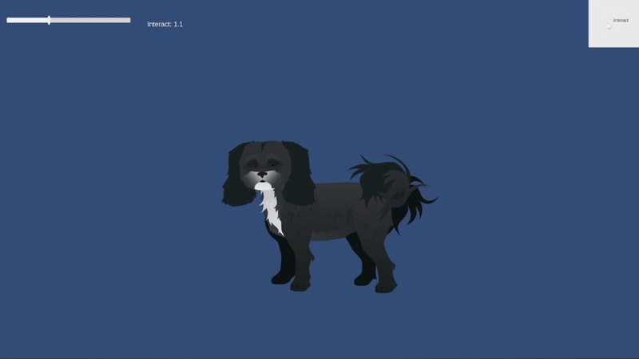
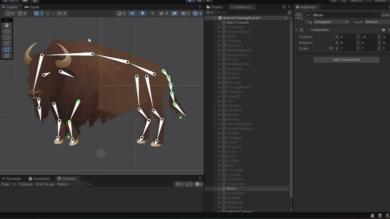
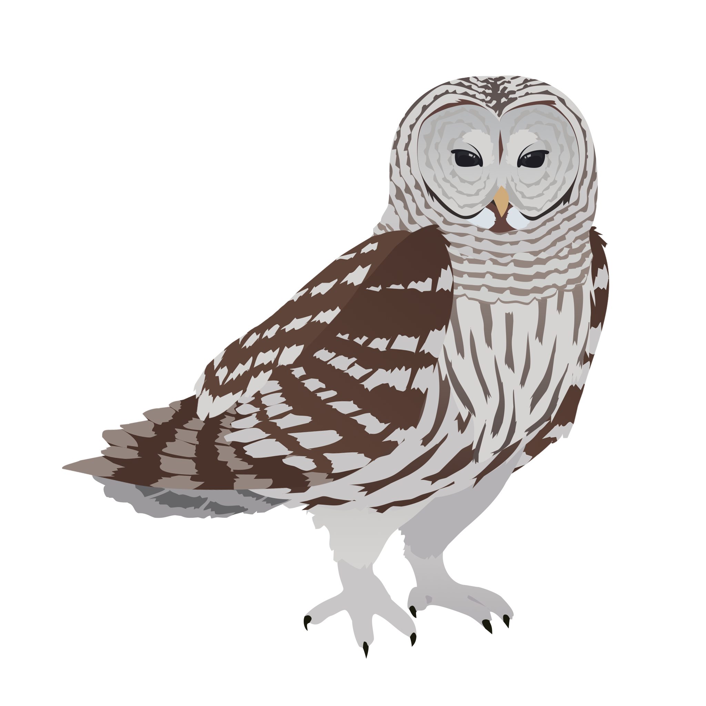
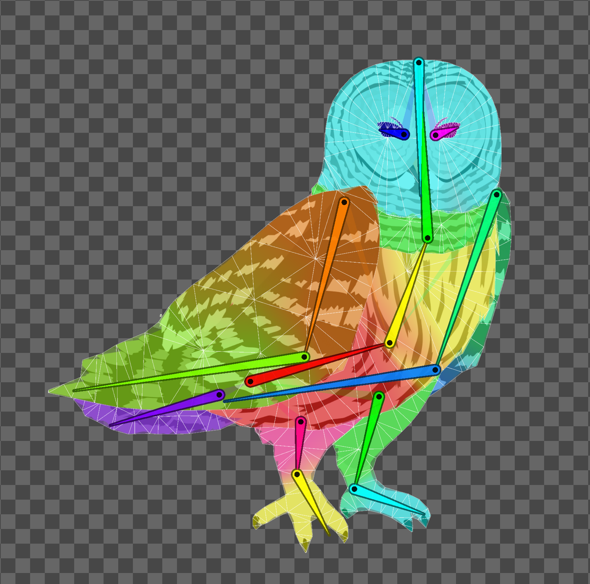
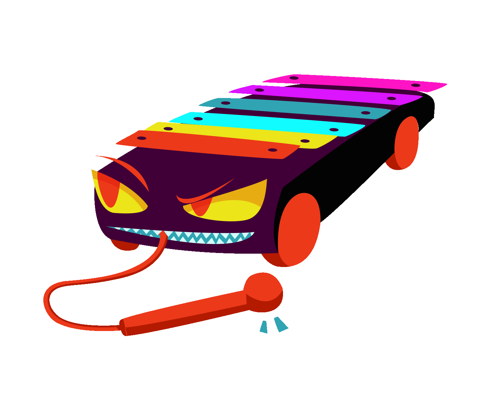
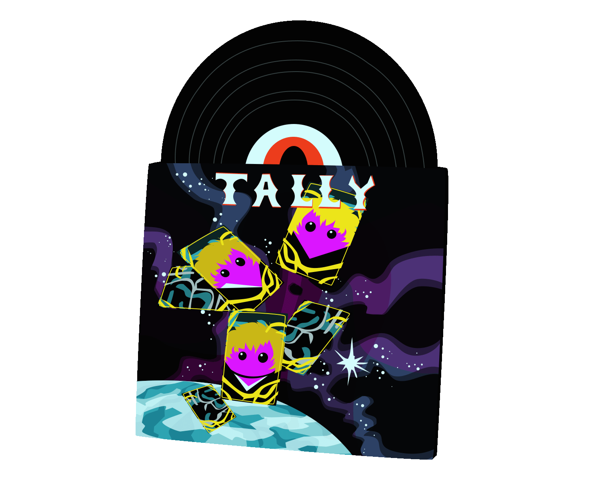
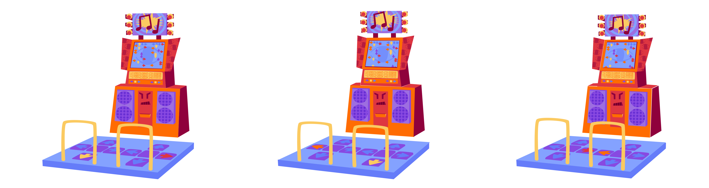

Guide
Video Games
Websites
Human-Computer Interaction
Animal Motion
5/2023-9/2023 and 5/2024-5/2025
Animal Motion is an upcoming mobile game where players complete "motion puzzles" to interact with and cheer up animals. The puzzles
are themed after each animal, and the goal is to teach empathy while having fun. I worked on animal illustrations, rigging, animations
and programmed the puzzle detection system currently used in the game. I also made contributions to the UI design, and gameplay design.
Animals were illustrated in Adobe Photoshop, rigged and animated in Unity Engine. The puzzle detection system was programmed in C# and implemented in Unity Engine.

Animals were illustrated in Adobe Photoshop, rigged and animated in Unity Engine. The puzzle detection system was programmed in C# and implemented in Unity Engine.


Animal animations in motion, all animals drawn, rigged, and animated by me!


Sketch, illustration, and skeleton/weights for the Barred Owl
Motion puzzle gameplay video.
Hair Guitar
9/2023-5/2024
Hair Guitar is an upcoming mobile game where players complete rock music themed minigames. I primarily developed two
minigames: a Whack-a-Mole style game called High Five Your Fans!, and a Simon style memory game called Guitar Pedal Hero.
I also created several art assets for these minigames and the overall game.
The minigames were programmed in C# and implemented in Unity Engine, all artwork was made in Adobe Photoshop and Procreate.
The minigames were programmed in C# and implemented in Unity Engine, all artwork was made in Adobe Photoshop and Procreate.
Video demos of both minigames. Artwork for High Five Your Fans! by me, artwork for Guitar Pedal Hero by Elaina Milano.
Tally Saves the Internet!
8/2021-5/2023
Tally Saves the Internet! is a
browser extension
where players fight monster representations of web trackers -- "product monsters" -- in a turn-based combat system. I worked on product monster
designs, artwork, and animations. These monsters were illustrated and animated in Adobe Photoshop, and I completed over 70 product monsters total!


Product monster animations

Product monster sprite sheet
Audio Access
2/2024
Audio Access is a website that myself and two others developed for a hackathon. I programmed and designed the website,
and helped with ideation. The project won best first time hack!
The website was developed using HTML, CSS, JS, and Webkit.
The website was developed using HTML, CSS, JS, and Webkit.
Original hackathon video
12/2022
Social Mediator is a website that replicates what it would be like to be a
content moderation bot.
It is no longer working, but when the API was properly connected it would fetch an AI generated hateful tweet, and you would
give it a negativity score. This score would then be compared to another AI's sentiment score, and you could then chose to
remove the post or keep it up and your choice would be compared to the AI's.
The website was developed using HTML, CSS, JS, and Huggingface. It was prototyped in Figma.
The website was developed using HTML, CSS, JS, and Huggingface. It was prototyped in Figma.
Social Mediator site when it was functional!
AP News Usability Test
10/2022
This website is a usability test of the AP News website. A small team and I
asked participants to perform different tasks and I later analyzed the results and created this website to show my findings.
The website was developed using HTML, CSS, and JS. It was prototyped in Figma.
The website was developed using HTML, CSS, and JS. It was prototyped in Figma.
Click the image to view the website!